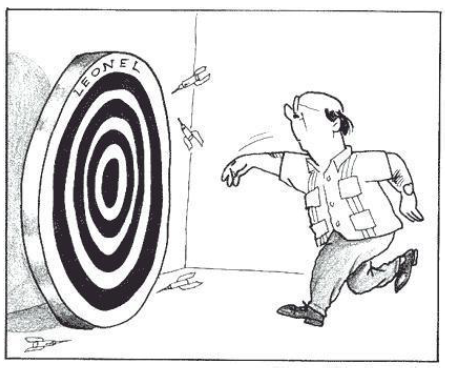
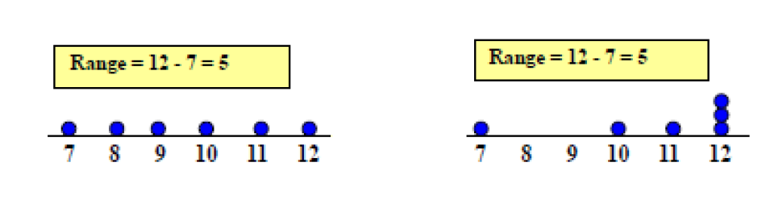
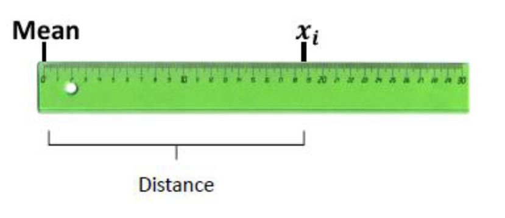
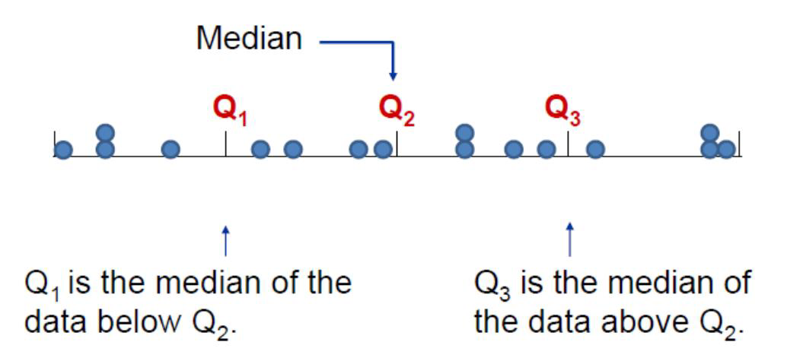
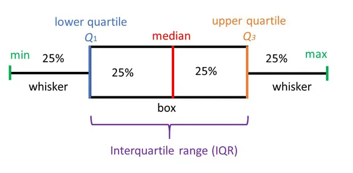

Análisis exploratorio de datos
Historia de la estadística
¿Qué es la estadística?
Ciencia que describe y realiza inferencias sobre el mundo desde una muestra de datos
Ciencia que proporciona metodologías para recolectar organizar, resumir, presentar y analizar datos y hacer inferencias a partir de ellos.
Ramas de la estadística
Estadística descriptiva: Organiza y describe las características de un conjunto de datos con el propósito de facilitar su aplicación, generalmente con el apoyo de gráficas, tablas o medidas numéricas.
Los parámetros estadísticos usados son las medidas de tendencia central y de variabilidad, y los gráficos de barras, de tortas y el histograma.
Estadística inferencial:
Obtiene conclusiones de la población partiendo de una muestra, por medio de diferentes métodos, como las puebas de hipótesis, pronósticos de futuras observaciones, correlaciones y modelos de asociación entre variables.
Algunas definiciones
Población: Conjunto de elementos sobre los que queremos hacer afirmaciones
Muestra: Conjunto de personas o cosas que se consideran representativos del grupo al que pertenecen, con la finalidad de estudiar o determinar las características del grupo.
Parámetro: Valor descriptivo de la población
Estadístico: Valor descriptivo para una muestra
Base de datos: Colección de información organizada, de tal modo que sea fácilmente accesible, gestionada y actualizada
Almacenamiento de bases de datos
Las bases de datos Surgen de la necesidad de almacenar la información a través de la historia
- Piedras, madera y arcilla, donde se escribian jeroglíficos.
- Los babilonios y mesopotámicos a través de la escritura cuneiforme que tallaban en tabletas y en rocas, al igual q los mallas
-La cultura inca que escribian en un sistema de cuerdas anudadas.
Puntos atípicos
- Papel
Edad media: Códice Formato de libro, Se compone de pergaminos plegados, cosidos y encuadernados.
El papel reemplazó progresivamente al pergamino, una herramienta más barata que permitió una difusión mas amplia, en la época moderna el códice fue hecho en papel
Films
Almacenamiento digital: bytes, tarjetas perforadas, CDs y memorias Actualmente es posible almacenar digitalmente en un disco compacto por ejemplo los datos que cabrian en miles de carpetas archivadas
Nube: Se puede guardar y compartir un volumen de archivos ilimitados, asi como acceder a ellos desde cualquier dispositivo con acceso a internet
A lo largo de la historia se ha buscado el sistema más pequeño físicamente con mayor capacidad de almacenamiento
Discos duros en la nube
Punto atípico o outlier Son observaciones extremas, alejadas hacia valores muy grandes o pequeños comparadas con el resto de valores. Los valores atípicos pueden ser indicativos de datos que pertenecen a una población diferente del resto de las muestras establecidas. Se pueden detectar con un análisis descriptivo, mediante diagramas de dispersión, boxplot o histograma.
Puntos atípicos
Tipos de variables
Característica o condición que puede tomar diferentes valores en una muestra. Ejm:
- Presión sanguínea
- Masa de los niños
- Frecuencia cardiaca
- Estatura de un grupo de estudiantes
- Edad de los pacientes de un médico
Tipos de variables
Actividad
Clasifique las siguiente variables según sea el caso
| variable | tipo de variable | clasificación | niveles |
|---|---|---|---|
| Color de ojos | Cualitativa | Nominal | verde, azul,cafe |
| Edad | |||
| velocidad | |||
| Estado civil | |||
| Color de la piel | |||
| Color del cabello | |||
| Marcas de carro | |||
| Número de hijos de una familia | |||
| Número de mensajes enviados por whatsap un dia | |||
| Número de estudiantes conectados a clase | |||
| Días de la semana |
Medidas de tendencia central
Son 3 valores que resumen y representan la información contenida en un conjunto de datos. Las tres medidas son la media, la mediana y la moda.

Moda
Es el valor que más se repite, si no hay datos que se repiten se dice que no hay moda. Si dos datos se repiten con la misma frecuencia se dice que los datos son bimodales.
Media
Valor promedio de un conjunto de datos numéricos, calculada como la suma del conjunto de valores dividida entre el número total de valores, la fórmula con la que se estima es:
Media Muestral
\[\bar x=\frac{\sum_{i=1}^{n}x_i}{n}\]
Media poblacional
\[\hat \mu =\frac{\sum_{i=1}^{n}x_i}{N}\]
Donde \(x_i\) corresponde a cada observación
N es el tamaño poblacional
n es el tamaño muestral
Según el teorema de límite central cuando n>30 se considera poblacional
Mediana
Es un valor que se encuentra en la mitad de los datos, cuando estos están ordenados
- si los datos son pares, la mediana es la suma de los dos valores centrales dividida por dos
\[M_e=\frac{X_{\frac{n}{2}}+X_{\frac{n}{2}+1}}{2}\]
- si los datos son impares la mediana es el valor que se encuentra en la posición \(\frac{n+1}{2}\)
\[M_e=X_\frac{_{n+1}}{2}\]
Ejemplo
Se tienen las edades de una muestra de estudiantes de estadística básica compuesta por hombres y mujeres
| Hombre | 20 | 22 | 26 | 20 | 26 | 19 | 20 | 21 | 26 | ||||
|---|---|---|---|---|---|---|---|---|---|---|---|---|---|
| Mujer | 20 | 20 | 31 | 26 | 23 | 42 | 23 | 20 | 24 | 25 | 24 | 27 | 22 |
Estime la media por género, la moda y la mediana.
Video medidas de tendencia central
Medidas de variabilidad
La media es un buen indicador de tendencia central, pero no da una evidencia real acerca de los datos.
Las medidas de variabilidad determinan el grado de acercamiento o distanciamiento de los valores de una distribución frente a su promedio de localización.
Entre más grande sea el grado de variación, menor uniformidad tendrán los datos (sinónimo de heterogeneidad) y por lo tanto menor confiabilidad del promedio de tendencia central o localización por haber sido obtenido de datos dispersos (Mendoza et al, 2002).
Si este valor es pequeño (respecto a la unidad de medida) entonces hay una gran uniformidad entre los datos(Mendoza et al, 2002).
Cuando es cero quiere decir que todos los datos son iguales.
Rango
Es la diferencia entre el valor máximo y el valor mínimo
Rango= valor max - valor mínimo
Esta medida ignora la manera en que los datos están distribuidos

Varianza y Desviación estándar
indica qué tan dispersos están los datos con respecto a la media

Caso poblacional
Varianza
\[\sigma^2=\frac{\sum_{i=1}^n(x_i-\mu)^2}{N}\] Desviación estándar
\[\sigma=\sqrt{\frac{\sum_{i=1}^n(x_i-\mu)^2}{N}}\] Caso muestral
Varianza \[S^2=\frac{\sum_{i=1}^n(x_i-\bar x)^2}{n-1}\] Desviación estándar \[S=\sqrt{\frac{\sum_{i=1}^n(x_i-\bar x)^2}{n-1}}\] Pasos para estimar la desviación estándar
Encuentre la media
Encuentre la desviación de cada uno de los valores con respecto a la media.
Eleve cada valor obtenido al cuadrado
Halle la suma de cada uno de los cuadrados
Divida la suma de los cuadrados por el número de ítems
Encuentre la raíz cuadrada de la varianza
Medidas de variabilidad
Diferencia en medidas entre la población y la muestra
| Medida | Población | Muestra |
|---|---|---|
| Tamaño | N | n |
| Media | \(\mu\) | \(\bar x\) |
| Varianza | \(\sigma^2\) | \(S^2\) |
| Desviación estándar | \(\sigma\) | S |
Comparemos

Cómo estimar la media, la desviación estandar en la calculadora
Coeficiente de variación
Es una medida de la dispersión relativa de un conjunto de datos, la cual relaciona la desviación típica de una muestra y su media.
Se expresa en términos porcentuales, la fórmula con la que se estima es: \[CV=\frac{S}{\bar x}*100\]
No depende de las unidades de medición, por lo que sirve para comparar la variabilidad de dos conjuntos de datos, siempre que sus medias sean positivas.
Ejemplo
Se tienen las edades de una muestra de estudiantes de estadística básica compuesta por hombres y mujeres
| Hombre | 20 | 22 | 26 | 20 | 26 | 19 | 20 | 21 | 26 | ||||
|---|---|---|---|---|---|---|---|---|---|---|---|---|---|
| Mujer | 20 | 20 | 31 | 26 | 23 | 42 | 23 | 20 | 24 | 25 | 24 | 27 | 22 |
Estime las medidas de variación y el coeficiente de variación.
Media ponderada
Es apropiada cuando en un conjunto de datos, cada uno de ellos tiene una importancia relativa (o peso) respecto de los demás datos. Se obtiene multiplicando cada uno de los datos por su ponderación (peso) para luego sumarlos
\[\bar X=\sum_{i=1}^{n}x_i*w_i\]
Donde \(X_i\) es cada una de las observaciones, \(W_i\) es la ponderación de cada uno de ellos.
\[\sum_{i=1}^n w_i=1\]
Ejemplo
Se tienen las siguientes notas de un estudiante
| Peso(%) | 25 | 15 | 35 | 10 | 15 | total |
|---|---|---|---|---|---|---|
| Nota | 4 | 3 | 2 | 1 | 4 | |
| Ponderación | 1 |
¿Cuál es la nota total obtenida en la materia?
Si faltara la última nota,¿Cuanto tendría que sacar para ganar la asignatura?
Medidas de posición
Son valores que permiten dividir el conjunto de datos en partes porcentuales iguales y se usan para clasificar una observación dentro de una población o muestra. Las medidas de posición más usuales son los cuartiles, los deciles y los percentiles.
Cuartiles
Son tres valores que distribuyen la serie de datos ordenada, en cuatro tramos iguales, en los que cada uno de ellos se concentra el 25% de los resultados.

La fórmula con la que se estima está dada por:
\[Q_k=X_{(k \frac{n+1}{4})}\] con k=1,2,3
Rango intercuartilico IQR Se define como la diferencia entre el tercer cuartil y el primer cuartil, es decir:
\[IRQ=Q_3-Q_1\]
The Interquartile Range (or IQR)
Deciles
Son 9 valores que distribuyen la serie de datos ordenada, en diez tramos iguales, en los que cada uno de ellos concentra el 10% de los resultados.
La fórmula con la que se estima está dada por:
\[D_k=X_{(k \frac{n+1}{10})}\] con k=1,2,3…9
Percentiles
Divide un conjunto de datos ordenados en 100 partes iguales, es decir hay 99 percentiles.
\[P_k=X_{(k \frac{n+1}{100})}\] con k=1,2,3…99
Boxplot
El boxplot es una herramienta de análisis que resalta las principales características de un conjunto de datos, los números usados para construirlo son:
- Valor mínimo
- Los cuartiles \(Q_1,Q_2,Q_3\)
- Valor máximo

Cada sección contiene el 25% de los datos. La caja muestra la mitad de los datos, es decir el 50% de ellos, contiene la información entre el 3 cuartil y el primer cuartil.
Sirve para realizar comparaciones de una variable cuantitativa, en relación a los niveles de una variable cualitativa.
Es posible observar la dispersión de cada caja, mientras mas larga, más dispersión.
Permite observar puntos atípicos,los cuales no están contenidos dentro de la caja, ni en sus bigotes.
Ejemplo en R
La siguiente información fue reportada en la revista Motor Trend de EE.UU, en el año 1974. contiene el consumo de combustible y 10 aspectos del diseño y rendimiento para 32 automóviles (modelos 1973–74).
A continuación se ilustra un resumen del número de cilindros que cada uno de los automoviles mostró
library(knitr)
library(ggplot2)
#Base de datos
head(mtcars)## mpg cyl disp hp drat wt qsec vs am gear carb
## Mazda RX4 21.0 6 160 110 3.90 2.620 16.46 0 1 4 4
## Mazda RX4 Wag 21.0 6 160 110 3.90 2.875 17.02 0 1 4 4
## Datsun 710 22.8 4 108 93 3.85 2.320 18.61 1 1 4 1
## Hornet 4 Drive 21.4 6 258 110 3.08 3.215 19.44 1 0 3 1
## Hornet Sportabout 18.7 8 360 175 3.15 3.440 17.02 0 0 3 2
## Valiant 18.1 6 225 105 2.76 3.460 20.22 1 0 3 1#resumen de todas las variables de la base de datos
summary(mtcars)## mpg cyl disp hp drat
## Min. :10.40 Min. :4.000 Min. : 71.1 Min. : 52.0 Min. :2.760
## 1st Qu.:15.43 1st Qu.:4.000 1st Qu.:120.8 1st Qu.: 96.5 1st Qu.:3.080
## Median :19.20 Median :6.000 Median :196.3 Median :123.0 Median :3.695
## Mean :20.09 Mean :6.188 Mean :230.7 Mean :146.7 Mean :3.597
## 3rd Qu.:22.80 3rd Qu.:8.000 3rd Qu.:326.0 3rd Qu.:180.0 3rd Qu.:3.920
## Max. :33.90 Max. :8.000 Max. :472.0 Max. :335.0 Max. :4.930
## wt qsec vs am gear
## Min. :1.513 Min. :14.50 Min. :0.0000 Min. :0.0000 Min. :3.000
## 1st Qu.:2.581 1st Qu.:16.89 1st Qu.:0.0000 1st Qu.:0.0000 1st Qu.:3.000
## Median :3.325 Median :17.71 Median :0.0000 Median :0.0000 Median :4.000
## Mean :3.217 Mean :17.85 Mean :0.4375 Mean :0.4062 Mean :3.688
## 3rd Qu.:3.610 3rd Qu.:18.90 3rd Qu.:1.0000 3rd Qu.:1.0000 3rd Qu.:4.000
## Max. :5.424 Max. :22.90 Max. :1.0000 Max. :1.0000 Max. :5.000
## carb
## Min. :1.000
## 1st Qu.:2.000
## Median :2.000
## Mean :2.812
## 3rd Qu.:4.000
## Max. :8.000#millas por galón
mpg=mtcars[,1]
#media de las millas por galón
mean(mpg)## [1] 20.09062#desviación estándar
sd(mpg)## [1] 6.026948##Media de mpg según elnúmero de cilindros
# Usually, you'll want to group first
mtcars %>%
group_by(cyl) %>%
summarise(mean = mean(mpg))## # A tibble: 3 x 2
## cyl mean
## <dbl> <dbl>
## 1 4 26.7
## 2 6 19.7
## 3 8 15.1#boxplot
boxplot(mtcars[,1]~mtcars[,2],xlab="cilindros",ylab="mpg",col ="pink")
Bibliografía
Mendoza, H, Bautista, G. (2002). Probabilidad y Estadística. Universidad Nacional de Colombia, http://www.virtual.unal.edu.co/cursos/ciencias/2001065/. Licencia: Creative Commons BY-NC-ND.
R Core Team (2019). R: A language and environment for statistical computing. R Foundation for Statistical Computing, Vienna, Austria. URL https://www.R-project.org/.